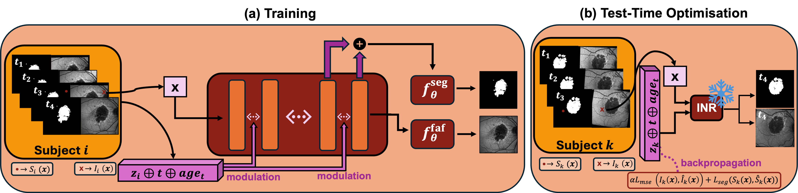
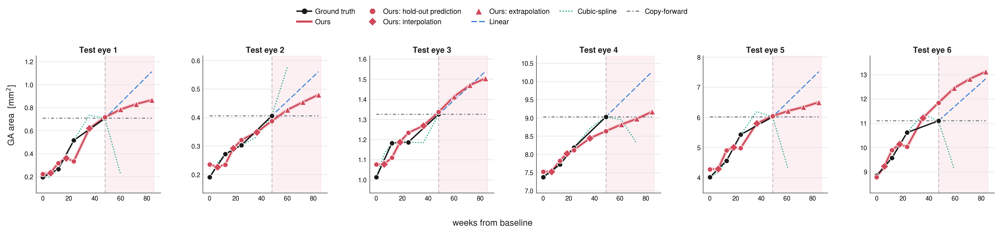
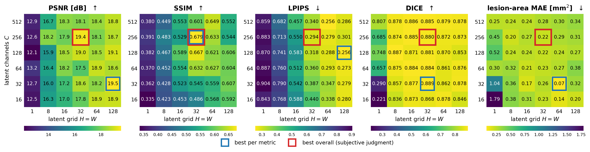

Age-related macular degeneration (AMD) is the major cause of blindness in the Western world. Its late dry phase is characterised by irreversible atrophic areas, namely geographic atrophy (GA). Longitudinal Fundus Autofluorescence (FAF) image acquisitions are currently the main tool for assessing lesion growth over time at the image level. However, due to its highly individualised progression, the evolution of late AMD remains poorly understood. In this work, we propose using Implicit Neural Representations (INRs) to model GA progression at the individual level in a low-data setting. Our approach generates both FAF and GA segmentation at both past and future time points. Compared with flow-matching models, diffusion-based models, and time-aware U-Net architectures, our method achieves the best segmentation quality in different scenarios, providing the lowest mean absolute error (MAE) for the GA lesion area and the best DICE score without sacrificing FAF image quality.

Our proposed model architecture. In the training phase (a), a spatial coordinate \(\mathbf{x}\in\mathbb{R}^2\) is fed into the MLP. Each layer of the MLP is conditioned by concatenating the latent vector \(z_i\) and the time variables via modulation. The INR outputs both the pixel intensity value \(\hat{I}_i(\mathbf{x})\) and the GA segmentation label \(\hat{S}_i(\mathbf{x})\). During test-time optimisation (b), a new latent vector \(z_k\) is used for a new eye \(k\) and optimised across both FAF images and GA segmentations, while keeping the INR parameters frozen. By concatenating the new optimised latent vector with the time-conditioning variables, the forward pass generates the new FAF image and GA segmentation at the specified time.
Predictions of FAF and GA segmentation maps over time for a single eye from the test set. A new latent vector is assigned to this eye and optimised on all visits except the one used for evaluation. Interpolated and extrapolated predictions are obtained by setting the value of the temporal variables (number of weeks from the baseline visits, and age of the patient at that visit) in between two existing visits or beyond the last available visit, respectively.
| Week | 0.0 |
| PSNR | — |
| SSIM | — |
| DICE | — |
| Predicted area | — |
| GT area | — |
| Area MAE | — |
The page is static (no model runs in your browser).
Our model's predicted FAF image and GA segmentation for an eye from the test set in the two Scenarios explored in the paper: take only a pair of available visits, and use the earlier visit as input to predict the more recent visit (Scenario 1); using the full patient's history to predict the last visit (Scenario 2).
Only the very first visit is given as input to predict the last one.
FAF: drag anywhere on the image to compare
Segmentation: drag anywhere on the image to compare
PSNR 16.7 dB · DICE 0.59 · Lesion-area MAE 0.39 mm²
Both scenarios predict Eye A's same last visit, only the input differs. Scenario 1 (V1→V4) is given just the very first visit; Scenario 2 is given the eye's full prior history (V1, V2, V3). That extra context cuts the lesion-area error roughly 19× (0.39 → 0.02 mm²) and raises DICE from 0.59 to 0.82, showing the benefit of taking into account the full patient's history.

One scatter panel per test eye: ground-truth lesion area at each real visit against GAP-INR's predicted trajectory, alongside copy-forward, linear interpolation/extrapolation, and cubic B-spline fits.
Channel count and spatial grid size of the per-eye latent, swept jointly.

The per-eye latent is a grid of shape (channels, H, W). Too coarse and the shared decoder cannot carry enough per-eye detail; too large and the latent risks memorising rather than generalising across visits. The heatmap reports held-out performance across the sweep of channel count (rows) and spatial grid size (columns); see the paper for exact values and the metric definition used.
@article{gapinr2026,
title = {Geographic Atrophy Progression using Implicit Neural Representations},
author = {},
journal = {},
year = {2026}
}